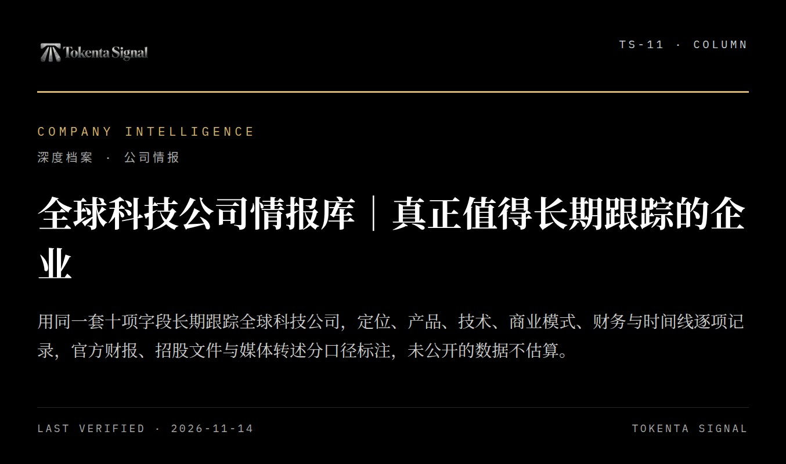
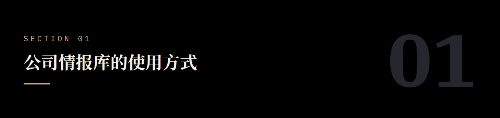
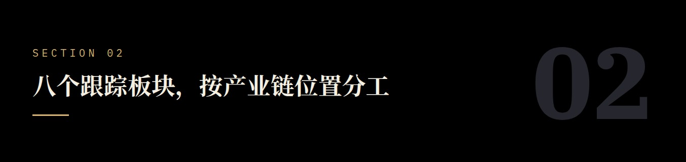
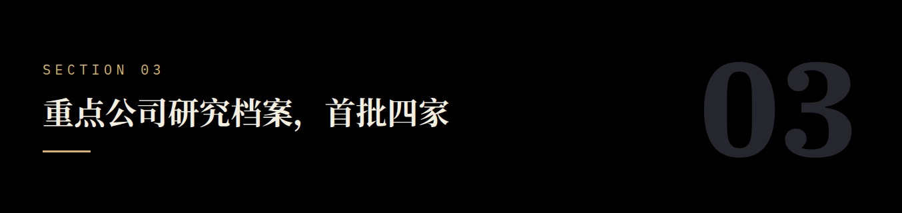
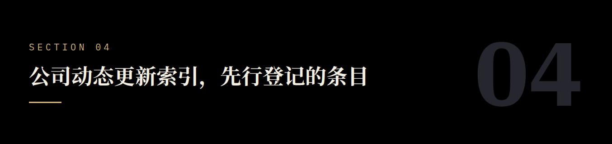

单条新闻只能回答一家公司昨天发生了什么，回答不了它在产业链里站在哪里，靠什么赚钱，下一步会被什么卡住。公司情报库把跟踪对象固定下来，用同一套字段持续记录同一批公司，让每一次财报、人事变动和产品发布都落回同一份档案里，前后可以对照，变化可以追踪。
首批档案选了四家公司，英伟达、Alphabet、Anthropic 与 OpenAI。选择标准是公开材料密度。上市公司有财报和交易所备案可以逐项核对，未上市公司只写已经进入公开文件的数字，媒体转述的闭门披露单独标注口径，公司没有公开的数据直接写未公开，不做估算，不用传闻补齐表格。

每份档案固定十个字段，公司定位、核心产品、技术能力、商业模式、管理团队、竞争对手、公开财务及融资信息、重大合作、发展时间线、观察指标。字段固定，比较才成立。读者想快速判断一家公司，先看定位与商业模式两项，想知道它最近发生了什么，直接翻时间线与动态索引，想自己继续研究，每份档案都附了官方入口与原始文件出处。
阅读时先分清数字的口径。标注为财报口径的数字来自上市公司正式财报，标注为招股文件口径的数字来自公司提交给监管机构的文件，标注为媒体报道口径的数字来自闭门会议或知情人士的转述，可信度依次递减，正文会逐项写明。同一家公司在不同口径下的数字不能直接相减，档案里遇到这类情况会单独提醒。
情报库的判断部分只写档案字段能够支撑的结论。一家公司换了管理层，档案会记录选聘进度与过渡安排，不会提前给接班人下定论。一家公司的供应商同时成为它的股东，档案会把这层关系写进重大合作字段，提醒读者它在议价与站队上的双重含义。判断跟着事实走，事实更新，判断就跟着修订，这是这个栏目与单篇新闻评论最大的区别。

情报库按产业链位置设六个公司板块。Frontier AI Companies 收录做前沿模型的公司，看模型能力与研究节奏。AI Infrastructure 收录云厂商与算力运营方，看资本开支与机房交付。Semiconductors 收录芯片设计与制造环节，看制程、封装与产能分配。Robotics 收录机器人本体与具身智能公司，看量产进度与真实部署。Enterprise AI 收录把模型卖进企业流程的公司，看付费客户与续约。Developer Platforms 收录开发者工具与平台，看生态黏性与开源策略。
第七个板块是科技资本与商业化能力，横向比较各家公司的融资结构、营收质量与烧钱速度，回答技术领先能不能转成持续收入。第八个板块由两件工具组成，重点公司研究档案收录写满十个字段的完整档案，公司动态更新索引按日期登记每家公司的重要变化，财报、人事、并购、重大合作与监管事件各占一行，附原始出处。后续新增公司先进入索引观察，材料攒够十个字段才升级为完整档案。

首批四家正好覆盖产业链的四个关键位置。英伟达站在算力供给端，它的财报是整个 AI 资本开支周期的温度计。Alphabet 同时握有自研芯片、云平台与搜索分发，它的选择会影响所有模型公司的生存空间。Anthropic 与 OpenAI 站在模型层，两家都在从研究机构转成卖企业服务的公司，一家已经把财务数据写进招股文件，另一家仍只通过闭门会议释放数字，口径差异本身就是情报。
四份档案的完整程度并不一致，这是有意保留的真实状态。英伟达与 Alphabet 的财务字段全部来自官方财报，可以写到分部收入与现金流。Anthropic 的财务字段来自招股文件，属公司正式披露，路演定价部分来自媒体对文件的转述，已单独标注。OpenAI 没有公开财报，营收与亏损只能按媒体报道口径记录，档案里明确写清未经审计，公司未公开置评。读者使用这四份档案时，请先看每项数字后面的口径再下判断。
NVIDIA 英伟达
公司定位 AI 算力供给端的核心公司，以 GPU 与加速计算平台定义数据中心建设标准，客户覆盖云厂商、模型公司与主权算力项目
核心产品 数据中心 GPU 与整机系统、CUDA 软件生态、网络互连产品，另有游戏显卡、专业可视化与汽车计算平台
技术能力 芯片、互连、软件栈与整机交付的垂直整合能力，CUDA 生态构成开发者迁移成本，新品节奏以年度为单位持续迭代
商业模式 向云厂商与企业销售芯片、系统与软件许可，数据中心业务占营收近九成，毛利率长期处于高位
管理团队 官方公告口径，2026 年 11 月 12 日黄仁勋辞去总裁、首席执行官与董事职务，即刻生效。自 2013 年起任首席财务官的 Colette Kress 出任临时首席执行官并兼任原职，Harvey C. Jones 出任董事会首任主席，永久首席执行官正在内外选聘
竞争对手 AMD 与各云厂商的自研芯片构成主要竞争，台积电先进封装产能是全行业共同的上游约束
公开财务及融资信息 官方财报口径，2026 财年（截至 2026 年 1 月 25 日）营收 2159 亿美元，同比增长 65%，第四季度营收 681 亿美元，全年毛利率 71.1%。公司为纳斯达克上市公司，无融资需求口径
重大合作 为 Anthropic 私募配售的主要认购方之一，媒体转述招股文件的口径为约 100 亿美元。与台积电的先进制程与封装合作决定其出货上限
发展时间线 1993 年联合创办，从图形芯片起步转入加速计算。2026 年 2 月发布 2026 财年业绩，营收创纪录。2026 年 11 月 12 日创始人辞职，临时管理层接管，第三财季业绩定于 11 月 17 日公布
观察指标 永久首席执行官人选与时间表，数据中心收入增速，毛利率变化，大客户自研芯片的替代进度，先进封装产能分配
人事变动来自英伟达投资者关系官方公告与 8-K 文件，财务数字来自官方财报与首席财务官评论文件，2026-11-14 核验。
Alphabet 与 Google
公司定位 同时握有搜索分发、自研芯片与云平台的综合科技公司，Google Cloud 已成为其 AI 基础设施对外输出的主通道
核心产品 Google 搜索与广告、YouTube、Google Cloud、TPU 芯片系列、Gemini 模型，以及 Waymo 等新业务
技术能力 TPU 自研路线已迭代到第八代，一年内推出四款系统，覆盖训练、推理与机密计算，云平台与芯片协同设计
商业模式 广告仍是收入基本盘，云服务按用量与合同收费，TPU 系统开始对外销售，分发、算力与模型三层同时变现
管理团队 官方财报电话会口径，首席执行官 Sundar Pichai，Google Cloud 首席执行官 Thomas Kurian，首席财务官 Anat Ashkenazi
竞争对手 云与 AI 基础设施层面对微软与亚马逊，模型层面对 OpenAI 与 Anthropic，搜索入口面对生成式问答产品
公开财务及融资信息 官方财报口径，2026 年第三季度总收入 1276 亿美元，同比增长 25%。Google Cloud 收入 307 亿美元，同比增长 103%，营业利润 111 亿美元。当季资本开支 514 亿美元，自由现金流负 91 亿美元。总积压订单 5677 亿美元，其中 Google Cloud 5608 亿美元，属已签约未确认收入，公司预计略超 55% 在未来 24 个月内确认（10-Q 口径）
重大合作 2026 年 11 月 4 日签署信用支持协议，为 Anthropic 在 TeraWulf 肯塔基州园区约 190 亿美元的 20 年租约提供信用背书，出处为 TeraWulf 提交的 8-K 文件。另为 Anthropic 私募配售主要认购方之一，媒体转述口径约 100 亿美元
发展时间线 2026 年 10 月 28 日发布第三季度财报，云收入首次翻倍增长。11 月 4 日为 Anthropic 租约提供信用支持。11 月 9 日发布 TPU 8tx 与 8i Max，价格与上市日期未公布
观察指标 资本开支指引与回报周期，云收入增速能否维持，TPU 对外销售占比，搜索广告在生成式入口冲击下的增速变化
财务数字来自 Alphabet 官方第三季度财报文件，TPU 信息来自 Google 官方博客，信用支持来自 TeraWulf 的 8-K 备案，2026-11-14 核验。
Anthropic
公司定位 前沿模型公司，以 Claude 系列模型与安全研究立身，收入结构正快速向企业业务倾斜
核心产品 Claude 模型与 API、Claude Code 编程工具、Claude Enterprise 企业方案、Managed Agents 智能体服务，以及 Sheets、Whiteboards、Data 等办公组件
技术能力 长上下文与编程能力是其模型的主要卖点，2026 年 11 月开放自托管 Managed Agents 私测，企业可在自有基础设施内运行智能体的编排、沙箱与凭证，模型调用仍走外部提供方
商业模式 API 按量收费与企业席位订阅并行，云合作伙伴渠道分销占重要位置，企业客户已成为增长主力
管理团队 首席执行官 Dario Amodei 为公司创始成员与主要公开发言人，其余高管分工以最新招股文件披露为准，待核验
竞争对手 模型层直面 OpenAI 与 Google，企业办公入口同时面对微软的既有套件生态
公开财务及融资信息 招股文件口径，公司 2026 年 11 月 2 日提交的 S-1 修正文件披露，第三季度营收 169.56 亿美元，经营亏损 5.67 亿美元，前九个月营收合计 332.42 亿美元，采购承诺与租赁合计 8954 亿美元，覆盖至 2045 年，属长期承诺而非当年支出。路演口径为媒体转述招股文件，11 月 10 日启动路演，每股 70 至 78 美元，公开募资上限约 644 亿美元，另有 260 亿美元私募配售
重大合作 算力与分发深度绑定云厂商，谷歌为其租约提供信用支持，台积电、谷歌、英伟达等供应商同时是其私募配售认购方，供应链与股东名单高度重合
发展时间线 2026 年 11 月 2 日提交 S-1 修正文件，首次完整披露季度财务。11 月 10 日启动 IPO 路演，同周发布办公组件四件套。11 月 12 日开放自托管 Managed Agents 私测，定价与全面上线时间未公布
观察指标 上市定价与首日表现，营收环比增速，算力成本占营收比例，企业业务占比，自托管智能体的正式定价
财务数字来自 S-1 修正文件的公开报道与文件摘录，路演数字为媒体转述招股文件口径，与公司正式定价公告分开记录，2026-11-14 核验。
OpenAI
公司定位 前沿模型公司，以 ChatGPT 建立消费者入口，再向企业服务与 API 平台延伸，行业议价能力来自用户规模与模型品牌
核心产品 ChatGPT 消费者与企业版、模型 API、Codex 编程智能体，以及面向医疗、金融等行业的企业版本
技术能力 多代旗舰模型的持续迭代与大规模推理运营，产品线覆盖对话、编程、图像与智能体任务
商业模式 消费者订阅、API 按量收费与企业合同三路并行，企业业务增速最快，渠道开始借用云厂商的市场与账单体系
管理团队 首席执行官 Sam Altman 为公司主要公开发言人，完整高管名单与治理结构以公司后续公开文件为准，待核验
竞争对手 模型与企业市场直面 Anthropic 与 Google，消费者入口面对各家免费问答产品
公开财务及融资信息 媒体报道口径，公司未公开财报。2026 年 11 月 10 日闭门投资者电话会披露的数据经华尔街日报与 The Information 转述，第三季度营收约 100 亿美元，首次单季破百亿，调整后经营亏损 109 亿美元，另有 26 亿美元股权激励未计入该口径。以上数字未经审计，公司未公开置评。融资与估值口径未公开
重大合作 2026 年 11 月 9 日 ChatGPT Enterprise 上架 AWS Marketplace，企业可用既有 AWS 采购与账单关系购买。台积电董事会批准向其投资最高 5 亿美元购买优先股，交易条款未披露，出处为台积电董事会决议的公开报道
发展时间线 2026 年 11 月 9 日企业版上架 AWS Marketplace。11 月 10 日投资者电话会披露第三季度数据，企业业务同比翻倍，已成为收入主体。机器人团队调整等组织变化见动态索引
观察指标 企业业务占比能否继续提升，亏损扩大速度，上市时间表与财务披露口径，云渠道分销的实际贡献
财务数字为媒体转述的闭门披露，与上市公司财报口径严格分开，产品与渠道信息来自 OpenAI 官方企业页面及上架公告的交叉核实，2026-11-14 核验。

索引按日期登记变化，每条只写事实与出处，判断留给档案正文。2026 年 10 月 28 日，Alphabet 发布第三季度财报，云收入翻倍。11 月 2 日，Anthropic 提交招股文件修正版，首次完整披露季度财务。11 月 4 日，谷歌为 Anthropic 的数据中心租约签署信用支持协议，备案方为 TeraWulf。11 月 9 日，OpenAI 企业版上架 AWS Marketplace，同日谷歌发布两款第八代 TPU。11 月 10 日，Anthropic 启动上市路演，台积电董事会批准分别向 Anthropic 与 OpenAI 投资最高 5 亿美元。11 月 12 日，英伟达宣布创始人辞职与临时管理层安排。
索引的更新规则有三条。第一，只登记能落到官方公告、监管备案或两家以上可靠媒体交叉确认的变化，单一匿名信源不登记。第二，涉及金额的条目必须带口径，财报、招股文件、媒体转述与董事会批准额度分别标注，批准额度不写成已完成投资。第三，索引条目积累到改变档案任一字段时，档案正文同步修订并更新核验日期，旧版本的变化过程保留在索引里，方便读者回看一家公司的判断是怎样被新事实修正的。

01 先看口径再看数字，每项财务数据后面的标注决定它能支撑多强的结论，媒体转述口径只适合看方向，不适合做精确比较。
02 比较两家公司时用同一字段对照，例如同时看商业模式与观察指标，避免拿一家的营收增速去比另一家的产品发布节奏。
03 追踪一家公司时先翻动态索引找到最近三条变化，再回档案看对应字段是否已经修订，两处对不上时以索引日期较新的一条为准。
04 档案中标注未公开与待核验的字段是明确的空缺，引用本栏目内容时请保留这些标注，不要用外部传闻自行补齐。
05 本栏目内容为公开信息整理与研究记录，不构成任何投资建议。

SOURCES · 来源与核验
[1] NVIDIA 投资者关系官方公告，首席执行官交接，2026-11-12
[2] NVIDIA 官方首席财务官评论文件，2026 财年第四季度与全年业绩
[3] Alphabet 官方第三季度财报文件，2026-10-28 发布
[4] Google 官方博客，TPU 8tx 与 8i Max 发布说明，2026-11-09
[5] TeraWulf 提交美国证交会的 8-K 文件，谷歌为 Anthropic 租约提供信用支持，2026-11-04
[6] Anthropic 官方 Claude 资源页，Sheets、Whiteboards 与 Data 发布说明
[8] The Decoder 报道，OpenAI 第三季度营收披露，媒体转述闭门投资者电话会口径，2026-11-11
[9] Silicon Report 报道，Anthropic 上市路演定价区间，媒体转述招股文件口径，2026-11-10
LAST VERIFIED · 2026-11-14
TOKENTA SIGNAL
Extracting signals from the noise. 本栏目内容来自公开来源并标注核验日期，不构成任何投资建议。
signal.tokenta.space · team@tokenta.space